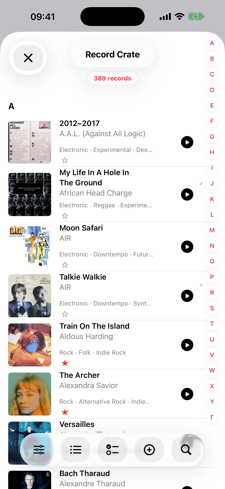
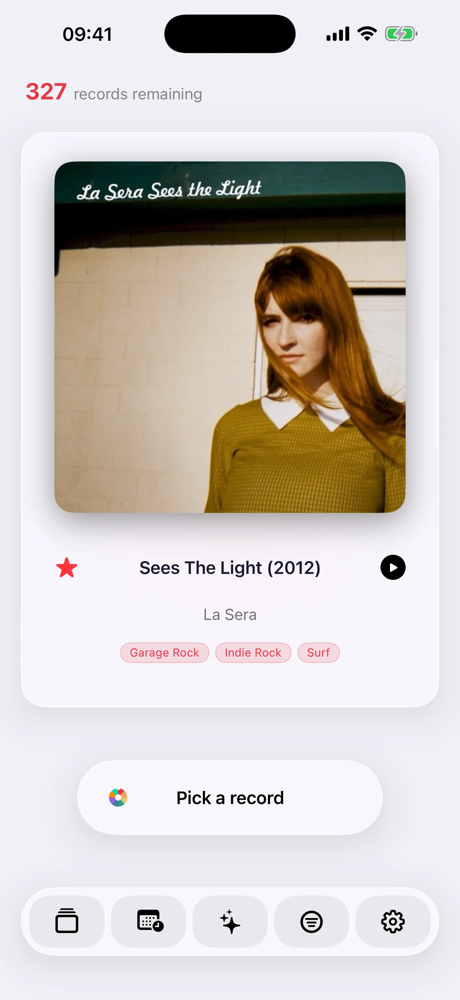

Record Picker fuar çekilişlerini, Mood Pick, zenginleştirilmiş kataloglamayı, iCloud'u, dışa aktarmayı, kopya yönetimini, 32 dili ve iPhone, iPad, Apple Watch ve Mac için yerel uygulamaları bir araya getiriyor.

Düzenli tutulan bir koleksiyon
Herkese açık veritabanları yetmediğinde bile temiz, denetlenebilir ve keyifli bir koleksiyon oluşturun.
Barkod tarama, MusicBrainz referansı bilmediğinde Discogs’a döner ve Discogs sürümü bulduğunda formu otomatik doldurur.
MusicBrainz ve Discogs’tan metadata
Kasadan ayrı istek listesi
Yinelenenleri algılama ve veri kalitesi kontrolleri
Kapak görselleri ve görsel veriler
Bulduğunuz veya kendiniz seçtiğiniz kapaklarla koleksiyonu gezmeyi keyifli tutun.
Cover Art Archive · iTunes Search · Deezer ile kapak arama
Fotoğraflar veya Dosyalar'dan manuel içe aktarım
Kapak eksik olduğunda web araması
Orijinal kapağı geri yükle
Kapak ve görsel veri düzenleme

Yatay iPhone seçimi
Yatay iPhone seçimi
MusicBrainz ve Discogs’tan metadata
İstatistikler
Özelleştirilebilir rastgele seçim
Kontrolü kaybetmeden sonraki plağı seçin; rastlantı koleksiyonu hareketli tutar.
Daha az çalınan plakları öne çıkaran ağırlıklı seçim
Yıl, tür, format, hız ve favorilere göre filtreler
Silmeden kenara almak için geçici hariç tutmalar
Neyin sık döndüğünü anlamak için gezilebilir geçmiş
Ruh halleri ve çalma
Ruh haline göre seçin ve koleksiyon zamanla kendini göstermeye devam etsin diye bir dinleme izi tutun.
Kullanılabiliyorsa yerel Apple modelleriyle ruh hali tabanlı seçim
Modeller kullanılamadığında yerel metadata tabanlı eşleştirme
Kullanılabildiğinde aygıt üzerindeki Apple Intelligence ile anlatımlı istatistikler
Seçilen veya çalınan plakların son geçmişi
Çalma seçenekleri
Apple Watch yeniden tasarlandı
Kapak bulanık arka plan olur; favori, son seçimi geri al ve sonraki seçim düğmelerinin her biri kendi dokunsal geri bildirimine sahiptir.
41 mm’den Ultra’ya uyarlanan yerleşim
Küçük iyileştirmeler: iPad kapak seçici daha dengeli, iPhone-Watch eşzamanlama daha hızlı, App Store yorum isteği daha zarif.
Gezinme ve koleksiyon bilgisi
iPhone ve iPad’e özel arayüzlerle uygulamadan çıkmadan koleksiyonu gezin, kontrol edin ve anlayın.
Kasada hızlı gezinme
Kasadan ayrı istek listesi
Birleşik Liquid Glass düğmeleri
Okunaklı iPad satırları ve kapaklardan ayrıntılara doğrudan erişim
Gerçekten işe yaradığı yerde iPad sürükle ve bırak
Yinelenenleri algılama ve veri kalitesi kontrolleri
MusicBrainz ve Discogs’tan metadata
Neyin sık döndüğünü anlamak için gezilebilir geçmiş
Zahmetsiz iCloud eşzamanlama
Üçüncü taraf AI sağlayıcısı yok, bulut AI yok; Apple Intelligence cihazda kalır
Kasa, istek listesi, çözülen yinelenenler, hariç tutmalar, geçmiş, geri yüklenebilir silmeler ve özel kapaklar cihazlarınızda kalır.
Kapak ve görsel veri düzenleme
Tablolar için CSV ve temiz JSON, kasa ve istek listesi ayrı
İsteğe bağlı tam yedek
İnternet yorumları asla otomatik toplanmaz
32 dil
Record Picker 32 dilde kullanılabilir; Arapça, Katalanca, Korece, Danca, Avustralya/Kanada/Birleşik Krallık İngilizcesi, Fince, Kanada Fransızcası, İbranice, Hintçe, Endonezce, Norveççe, Lehçe, Portekizce, Rusça, İsveççe ve Türkçe yeni eklendi.
Arapça, İbranice, Hintçe, Japonca, Korece, basitleştirilmiş ve geleneksel Çince
Sürümler
v2.3
Apple Watch'taki Record Picker'de başka bir müzik albümü seçer.
iPhone · iPad · Mac · Apple Watch · Şimdi indirilebilir
Bir müzik albümü seçin · Random Pick · Favoriler
Nadiren dinlenen müzik albümleri · Son eklenen · Klasik · Sakin akşam · Enerjik
Çevrimdışı · Eşzamanlama sırada · Eşzamanlanıyor · Güncel
Apple Watch'ta oynayın · Oynatma başladı · Dinlendi
Günün Seçimi, güvenilir müzik haberlerini sahip olduğunuz bir plakla eşleştirir ve bugün neden önemli olduğunu açıklar.
v2.2
Record Picker 2.2, koleksiyonunuzu içe aktarmayı, kataloglamayı ve yeniden keşfetmeyi daha hassas hâle getirir.
CSV içe aktarma artık koleksiyon ile istek listesini açıkça ayırır, özel sütun eşlemeyi destekler ve ayrıntılı sonuç özeti sunar.
Sanatçı, tür ve plak şirketi önerileriyle tercih edilen fiziksel format, kendi meta verilerinizi değiştirmeden girişi hızlandırır.
Tür sıralaması ve çoklu tür filtreleri keşfi kolaylaştırır, Random Pick ve Mood Pick sonuçlarını iyileştirir.
Günün Plağı daha güçlü kaynaklar, güncellik ve kanıt gösterir; ilgili veya ilgisiz geri bildirimi sonraki önerileri geliştirir.
Güvenilirlik, erişilebilirlik ve çeviri iyileştirmeleri büyük koleksiyonları iPhone, iPad ve Mac’te hızlı ve özel tutar.
Record Picker 2.3
Record Picker ilk dakikaları daha akıcı, günlük kullanımı daha güvenilir hâle getiriyor.
Eksik veya çok satırlı dışa aktarımlar dâhil daha sağlam Discogs CSV içe aktarma.
Random Pick, Mood Pick, Günün Plağı, yedekleme ve ayarlar için sıfırlanabilir, sade yardım.
Apple Intelligence desteklenen aygıtlarda İstatistik analizini özel olarak oluşturabilir; uygulama yerel analizin ne zaman devreye girdiğini açıklar.
Mood Pick ve Günün Plağı’te daha hızlı kapaklar; iPhone, iPad ve Mac’te geliştirilmiş düzenler.
Daha güvenli yedekleme, geri yükleme ve veri silme ile çok sayıda çeviri ve kullanım düzeltmesi.
Koleksiyonunuz gizli ve sizin denetiminizde kalır.
v1.9
Record Picker 1.9, Günün Seçimi’ni sunuyor: zaten sahip olduğun bir plağı yeniden keşfetmek için güncel ve özel bir neden.
Doğrulanmış müzik haberleri, önemli yıl dönümleri ve isteğe bağlı yakındaki konserler yalnızca cihazında koleksiyonunla eşleştirilir.
Her öneri neden seçildiğini açıklar ve tarihli kaynağını gösterir. İstek listesi haberleri dinleyebileceğin plaklardan ayrı tutulur.
İsteğe bağlı özel anımsatıcılar, alaka geri bildirimi ve Apple Watch’taki Günün Seçimi önerileri yararlı tutar. Koleksiyonun hiçbir zaman haber hizmetine gönderilmez.
Record Picker ≤ 1.8
v1.8
Record Picker 1.8; iPhone, iPad, Apple Watch ve Mac’i tek bir sürüm numarası altında birleştirir.
Daha fazla fiziksel format: plak, CD, SACD, hibrit SACD, MiniDisc, kaset, DVD-Audio, Blu-ray Audio ve 78 devirlik plaklar.
Eserler, katalog numaraları, şefler, orkestralar, topluluklar, solistler, kayıt tarihleri ve yerleri için özel klasik müzik alanları.
Tarafsız Media Format alanıyla daha açık CSV içe ve dışa aktarma; eski Record Picker dosyaları uyumlu kalır.
Yedekler, favoriler, kapaklar, içe aktarma ve metadata düzeltmeleri için daha güçlü güvenilirlik.
Uygulamanın güvenle yapabileceği düzeltmeleri kararınızı gerektiren seçimlerden ayırır; her önerinin kaynağını ve güven düzeyini gösterir.
MusicBrainz ve Discogs uyuşmazlıklarını yan yana karşılaştırır. Onarım kuyruğu sürdürülebilir, CSV olarak dışa aktarılabilir ve değişiklikler geri alınabilir.
Yeni dört adımlı kılavuz içe aktarmayı, veri kalitesini, Random Pick, Mood Pick ve Free/Pro'yu tanıtır.
Kayıt sayfaları önce orijinal çıkış yılını gösterirken sahip olduğunuz baskının kesin yılını da korur.
v1.6
Record Picker ömür boyu Pro ve yerel Mac uygulamasıyla ücretsiz oluyor
Record Picker artık 100'e kadar kayıttan oluşan koleksiyonlar için ücretsizdir; Tek seferlik Pro satın alımı, iPhone, iPad ve Mac'te abonelik gerektirmeden sınırsız bir koleksiyonun kilidini açar.
Yeni yerel Mac uygulaması, koleksiyona göz atmak, zenginleştirmek, temizlemek ve yeniden keşfetmek için büyük ekranı bir komuta merkezine dönüştürüyor.
Durumu artık özel bir Senkronizasyon Merkezi'nde görülebildiği için iCloud senkronizasyonu daha hızlı yanıt veriyor.
CSV içe aktarmaları artık mevcut favorileri koruyor; Ayrıca, mevcut koleksiyonu değiştirmeden, sık kullanılanları yalnızca önceki bir yedeklemeden geri yükleyebilirsiniz.
Yinelenen kopyaların tespiti çok daha hızlı, inceleme seçimi daha iyi ve inceleme-anahtar kelime yeniden indeksleme artık net bir ilerleme gösteriyor.
Bir hatanın veri kaybı gibi görünmesi yerine depolama tanılama rapor sorunlarını temizleyin.
v1.5
Daha güçlü senkronizasyon, çizim ve veri kalitesi
iPhone, iPad ve Apple Watch'ta daha güvenilir iCloud senkronizasyonu.
Artık manuel veya barkodlu girişten sonra görseller daha sağlam geri dönüşlerle otomatik olarak ekleniyor.
Geliştirilmiş veri kalitesi araçları, kopya yönetimi ve kritik inceleme alma.
v1.4
Özelleştirilebilir rastgele seçim, yenilenmiş Apple Watch, net plak kasası, 32 dil ve koleksiyonerlere yönelik içe/dışa aktarma araçlarıyla koleksiyonunuzu yeniden keşfedin.
Yatay iPhone seçimi
Neyin sık döndüğünü anlamak için gezilebilir geçmiş
Kasadan ayrı istek listesi
İstatistikler
Küçük iyileştirmeler: iPad kapak seçici daha dengeli, iPhone-Watch eşzamanlama daha hızlı, App Store yorum isteği daha zarif.
v1.3
Apple Watch yenilendi, Discogs yedeği ve 32 dil
Kapak bulanık arka plan olur; favori, son seçimi geri al ve sonraki seçim düğmelerinin her biri kendi dokunsal geri bildirimine sahiptir.
41 mm’den Ultra’ya uyarlanan yerleşim
Barkod tarama, MusicBrainz referansı bilmediğinde Discogs’a döner ve Discogs sürümü bulduğunda formu otomatik doldurur.
Record Picker 32 dilde kullanılabilir; Arapça, Katalanca, Korece, Danca, Avustralya/Kanada/Birleşik Krallık İngilizcesi, Fince, Kanada Fransızcası, İbranice, Hintçe, Endonezce, Norveççe, Lehçe, Portekizce, Rusça, İsveççe ve Türkçe yeni eklendi.
Küçük iyileştirmeler: iPad kapak seçici daha dengeli, iPhone-Watch eşzamanlama daha hızlı, App Store yorum isteği daha zarif.
v1.2
Katalog, akıllı seçim ve Apple Watch eşlikçisi
İçe aktarma, manuel albüm girişi ve barkod tarama için tam müzik kataloğu.
Animasyonlu rastgele seçim, yıl filtreleri, favoriler, geçici dışlamalar, dinleme geçmişi ve koleksiyon istatistikleri.
Kullanılabiliyorsa yerel Apple modelleriyle ruh hali tabanlı seçim, yoksa koleksiyon metadatasından cihaz üzerinde eşleştirme.
MusicBrainz metadatası, Cover Art Archive kapakları veya manuel kapak içe aktarımı, yedekleme/geri yükleme, Siri Kestirmeleri ve Apple Watch eşlikçisi.
Koleksiyon yerel olarak saklanır; metadata ve kapak aramaları yalnızca kullanıcı başlattığında gerçekleşir.
v1.1.1
App Store iyileştirmeleri
Arayüz ve iç temeller daha akıcı bir deneyim için iyileştirildi.
Geliştirilmiş iPad desteği.
Eleştirel incelemeleri daha iyi kullanan ruh hali tabanlı seçim.
Veri kalitesi: plak ayrıntı sayfaları, manuel satır silme ve Discogs/MusicBrainz aramaları.
Eksik parçalar: MusicBrainz araması ardından Discogs araması.